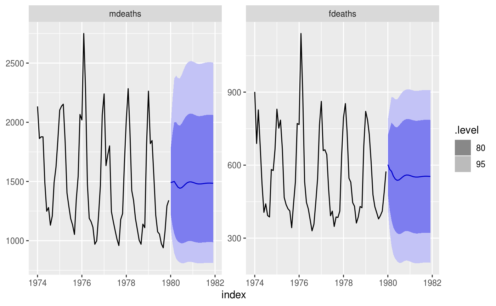

VAR.RdEstimate an VAR model
VAR(formula, ic = c("aicc", "aic", "bic"), ...)
| formula | Model specification (see "Specials" section). |
|---|---|
| ic | The information criterion used in selecting the model. |
| ... | Further arguments for arima |
AR special is used to specify the lag order for the auto-regression.
AR(p = 0:5)
p | |
| The order of the auto-regressive (AR) terms. If multiple values are provided, the one which minimises | |
ic | will be chosen. |
xreg() special. Common exogenous regressor specials as specified in common_xregs can also be used. These regressors are handled using stats::model.frame(), and so interactions and other functionality behaves similarly to stats::lm().
The inclusion of a constant in the model follows the similar rules to stats::lm(), where including 1 will add a constant and 0 or -1 will remove the constant. If left out, the inclusion of a constant will be determined by minimising ic.
xreg(...)
... | |
| Bare expressions for the exogenous regressors (such as | |
log(x) | ) |
lung_deaths <- cbind(mdeaths, fdeaths) %>% as_tsibble(pivot_longer = FALSE) fit <- lung_deaths %>% model(VAR(vars(log(mdeaths), fdeaths) ~ AR(3))) report(fit)#> Series: mdeaths, fdeaths #> Model: VAR(3) w/ mean #> #> Coefficients for log(mdeaths): #> lag(log(mdeaths),1) lag(fdeaths,1) lag(log(mdeaths),2) lag(fdeaths,2) #> 1.0361 0e+00 0.3054 -8e-04 #> s.e. 0.2642 4e-04 0.2969 4e-04 #> lag(log(mdeaths),3) lag(fdeaths,3) constant #> -0.3004 1e-04 0.0950 #> s.e. 0.2567 4e-04 2.0712 #> #> Coefficients for fdeaths: #> lag(log(mdeaths),1) lag(fdeaths,1) lag(log(mdeaths),2) lag(fdeaths,2) #> 448.8642 0.2890 205.8660 -0.4334 #> s.e. 174.2395 0.2515 195.8019 0.2553 #> lag(log(mdeaths),3) lag(fdeaths,3) constant #> -234.3394 0.0251 -2433.657 #> s.e. 169.2827 0.2471 1365.746 #> #> Residual covariance matrix: #> log(mdeaths) fdeaths #> log(mdeaths) 0.0204 11.8194 #> fdeaths 11.8194 8874.6465 #> #> log likelihood = -316.92 #> AIC = 669.84 AICc = 683.52 BIC = 710.06fit %>% forecast() %>% autoplot(lung_deaths)